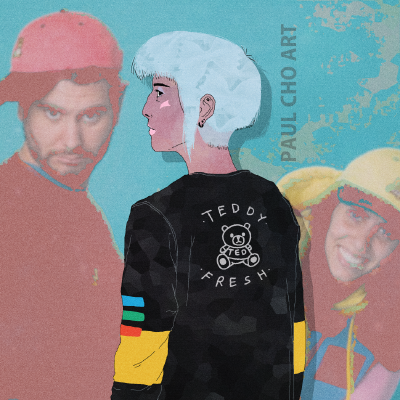
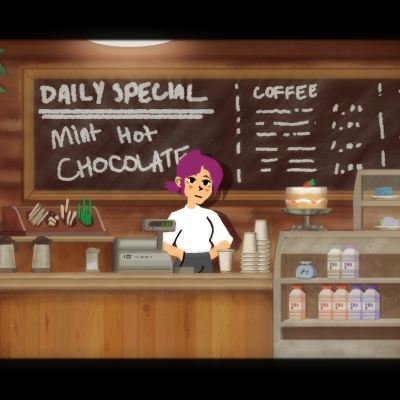
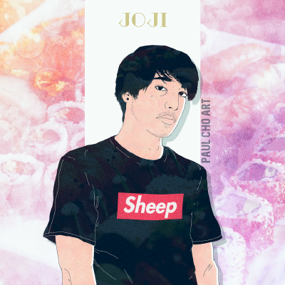
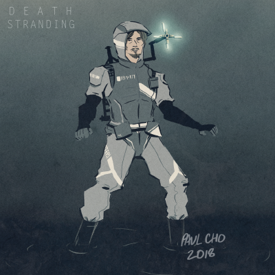
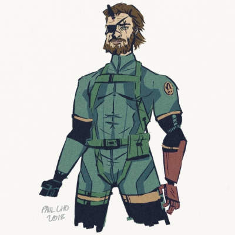
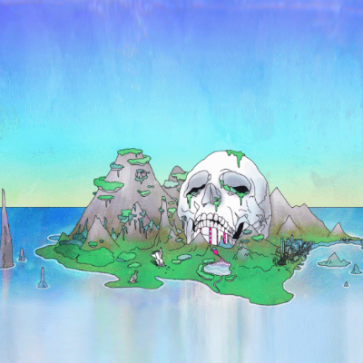
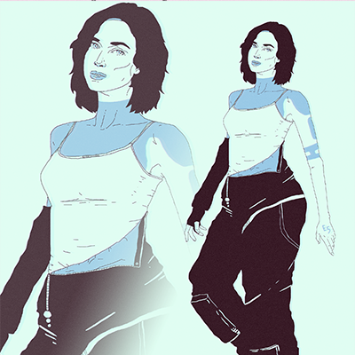
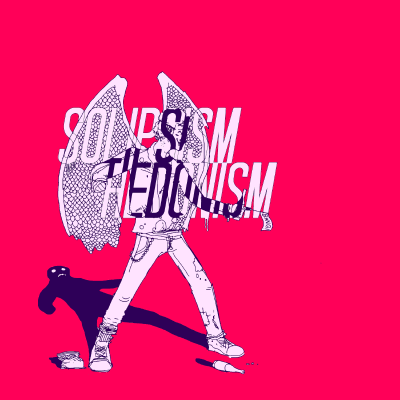
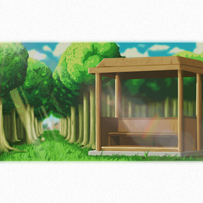
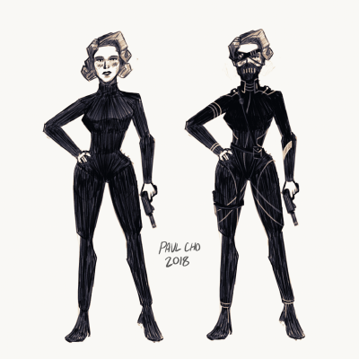

art
design
◉ Occurio
OCCURIO is a hi-fi prototype designed as a senior project for my User Centered Design course at university. The result of an entire semester's work, Occurio is an application front end that allows students to easily find and list on-campus events, whether they be hosted by students or faculty.
I worked in a team with 2 other students to incorporate the knowledge and methods we learned in our class to create an informed and fluid prototype. Behind the final product are many interviews, experience maps, icon sketches, and whiteboard drawings of layouts.
The in-browser prototype can be found by clicking here.
◉ Soundsky
SOUNDSKY is a simple music-streaming mockup, meant to be a study in how to design an interactive interfact without using the native tools to do so. This means that Soundsky was not built using an application that speeds up the prototyping process. My desire here was to make sure I understood what actually happens behind the scenes of a prototype, instead of letting a design application handle it for me. I personally feel that the more I understand the intricacies of a process, the better I can manipulate the time-saving tools to maximize effects and minimize headaches.
The in-browser prototype can be found by clicking here.
programming
◉ OpenGL ES Shaders
My latest foray into graphics-related technology is writing shaders using GLSL ES. Shaders, programmable parts of the graphics pipeline, allow me to perform visual effects and transformations at a very low cost to program efficiency, since shaders are GPU operations. The choice to use GLSL ES comes from it's portablility and popularity in embdedded systems. Many of my shaders are meant for 2D graphics and effects, but my more recent shaders are focused on 3D visuals; depth-based blur, vertex-manipulated animation, shadow-mapping, and other related methods.
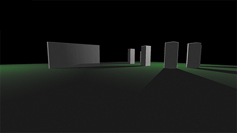
◉ MotherSea
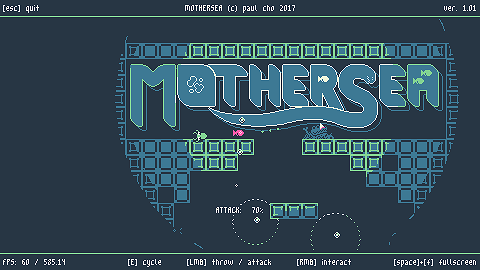
MOTHERSEA is a short game made for a GameMaker-focused game jam within 72 hours from scratch. Awarded 2nd place, as well as "Best Presentation," the game focuses on a small fish & squid duo using light orbs to search for stranded fish lost in the darkness of the deep ocean. This game was my first serious attempt to use shaders to achieve an effect that would shape the user's experience. Instead of fading from lightness to darkness with an alpha blend, as is typically done for lighting, the shader reads the light value of a texture buffer and swaps the colour to reflect how bright that pixel currently is. This allows the game to display no more than 4-5 colours across the entire screen, while still creating an environment that is clear and readable.
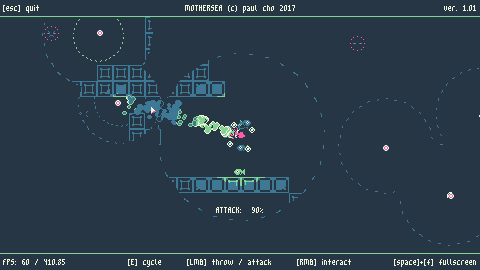